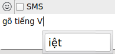

Dẹp ibus-unikey đi, dùng fcitx-unikey nhé!
Cập nhật tháng 1/2021: hiện tại mình dùng fcitx5 trên Arch + KDE, cài đặt và config không thể đơn giản hơn:
sudo pacman -S fcitx5 fcitx5-qt fcitx5-gtk fcitx5-unikey kcm-fcitx5
Sau đó thêm đoạn này vào /etc/environment:
GTK_IM_MODULE=fcitx
QT_IM_MODULE=fcitx
XMODIFIERS=@im=fcitx
Vào System Settings > Regional Settings > Input Method > Add Input Method, chọn Unikey, tùy chỉnh tùy ý.
Fcitx5 khắc phục được lỗi crash renderer khi dùng facebook messenger trên Firefox, và gõ được trên Telegram 🤷.
Còn dưới đây là bài viết cũ:
Sáng ra Netrunner bảo có vài chục cái update, mình chủ quan dist-upgrade -y rồi để đó không màng
đến nữa. Nửa tiếng sau, ibus không thèm chơi với firefox! :|
Chuyện gõ tiếng Việt trên linux thì muôn đời trần ai rồi, mình không muốn bàn thêm nữa. Trung Ngô—một trong những người phát triển chính của ibus-bogo—đã viết một bài blog rất hay về tình trạng gõ tiếng Việt hiện nay trên linux nói chung, ai quan tâm có thể tham khảo thêm ở đây.
fcitx-unikey#
Lọ mọ trên trang github của bogo, mình vô tình phát hiện ra fcitx-bogo: dự án này thực chất cũng dùng bogo-engine nhưng chạy với fcitx chứ không phải ibus như bình thường. Rất tiếc là khi mình cài đặt và chạy thử fcitx-bogo thì nó luôn crash fcitx trước khi xử lý ra được chữ tiếng Việt nào. :P
Dạo một vòng quanh trang github của fcitx, mình thấy dự án này vẫn được phát triển đều đặn chứ không bị cảnh đem con bỏ chợ như ibus, và thứ làm mình ngạc nhiên và mừng nhất chính là một repo với cái tên rất hứa hẹn: fcitx-unikey.
Cách compile và cài đặt đã được nêu rõ trên README nên mình sẽ không nói lại ở đây nữa. Một vài nhận xét sau khi dùng thử trên Netrunner 14 (em họ của Kubuntu):
- Không hiện popup vô duyên khi chuyển method như ibus.
- Không bật method tiếng Việt vô tội vạ như ibus. Trước đây khi dùng ibus, mặc dù đã tắt tính năng “Share same input method among all applications”, method tiếng Việt vẫn được kích hoạt mặc định trong các system dialog của KDE, rất khó chịu (bực nhất là nó bật preedit trên ô điền password nên mỗi khi khóa máy rồi login lại là password hiện lên hết). Fcitx không bị như vậy, vì method mặc định luôn là tiếng Anh.
Một điểm trừ là khi dùng trên skype, phần text đang trong preedit bị hiển thị trong một ô riêng chứ không chỉ là text bị gạch dưới như trong những chương trình khác. (xem hình dưới)

vim-fcitx#
Những ai đã thử gõ tiếng Việt trên vim chắc chắn đều biết: không tài nào dùng normal mode khi
preedit đang bật được. Ngày xưa khi dùng ibus mình có thử viết một plugin để bật tiếng Việt
khi vào insert mode và trở lại tiếng Anh khi ra normal mode, nhưng cuối cùng không dùng vì preedit
trong insert mode làm hư inoremap jj <esc>.
Plugin vim-fcitx hoạt động tương tự như trên, và vấn đề map jj nêu trên có thể được giải quyết bằng cách sửa mã nguồn của fcitx-unikey.
Mình gõ tiếng Việt kiểu VNI nên bộ gõ chắc chắn không bao giờ xử lý ký tự j => có thể thêm ký tự
j vào danh sách WordBreakSyms trong src/unikey-im.cpp. (xem tại đây)
Sau đó chỉ cần compile lại fcitx-unikey là xong!